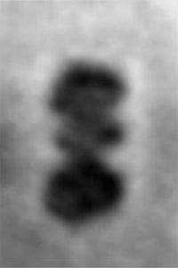

Αρχείο · Επικοινωνία της Επιστήμης
Η πρώτη εικόνα μιας και μόνο πρωτεΐνης
Γιατί είναι τόσο δύσκολο να απεικονίσουμε ένα μεμονωμένο μόριο πρωτεΐνης και πώς χρησιμοποιήθηκαν το γραφένιο και η ηλεκτρονική μικροσκοπία.

Αρχικό κείμενο
Εντάξει η φωτογραφία είναι λίγο θολή, αλλά αυτό που βλέπεις εδώ, είναι η πρώτη εικόνα μιας και μόνο πρωτεΐνης που “φωτογραφήθηκε” ποτέ.
Ο λόγος που ως τώρα δεν μπορούσαμε να δούμε μια πρωτεΐνη ως ένα μοναδικό μόριο, είναι επειδή οι πρωτεΐνες δεν κάθονται ήσυχα σε ένα μέρος για να προλάβεις να τραβήξεις εύκολα ένα snap και συνήθως οι τεχνικές φωτογράφισης τις κατέστρεφουν.
Φαντάσου να προσπαθήσεις να βγάλεις μια σέλφι ενώ τρέχεις και σε κάθε κλικ να καίγεται το δέρμα σου.
Ως τώρα, όσοι προσπαθούν να απεικονίσουν τρισδιάστατες δομές πρωτεϊνών, τις ακινητοποιούν με κρυσταλλογραφία ή τις καταψύχουν και μετά τις βομβαρδίζουν με φωτόνια ή ηλεκτρόνια υψηλής ενέργειας. Οι πρωτεΐνες αλλοιώνονται ή καταστρέφονται τελείως σχεδόν μετά από κάθε πόζα, οπότε αναγκαστικά χρησιμοποιούνται χιλιάδες ή εκατομμύρια μορία μιας πρωτεΐνης για να φωτογραφηθεί από όλες τις οπτικές γωνίες. Κάποιοι τύποι λοιπόν στη Ζυρίχη έλυσαν αυτά τα προβλήματα. Δοκίμασαν να βάλουν τις πρωτεΐνες σε μια φιάλη και να τις ψεκάσουν επάνω σε γραφένιο για να τις ακινητοποιήσουν. Το γραφένιο είναι το πιο λεπτό υλικό που έχει κατασκευαστεί ποτέ (σαν ένα φύλλο από τσιγαρόχαρτο που αποτελείται από ένα μοναδικό στρώμα από άτομα άνθρακα). Στη συνέχεια έβαλαν το φύλλο γραφενίου κάτω από ένα ηλεκτρονικό μικροσκόπιο ολογραφίας και voilà! Τέσταραν με αυτή τη μέθοδο γνωστές πρωτεΐνες όπως η αιμοσφαιρίνη, η αλβουμίνη και το κυτόχρωμα C, παίρνοντας εικόνες όμοιες με τα μοντέλα που έχουν αναπαραστεί ήδη με κρυσταλλογραφία. Μελλοντική προσπάθεια είναι να απεικονιστούν και μόρια που είναι αδύνατο να μελετηθούν οι δομές τους με τις παλιές μεθόδους.
Γιατί μας ενδιαφέρει να ξέρουμε κάθε σπιθαμή μιας πρωτεΐνης; Οι πρωτεΐνες κάνουν τις περισσότερες δουλειές στο σώμα μας, μεταφέρουν οξυγόνο, καταλύουν αντιδράσεις και φροντίζουν για όλα μέσα στα κύτταρά μας. Για να εργάζονται σωστά, πρέπει να στέκονται “κάπως” στο χώρο. Πολλές ασθένειες, όπως η νόσος του Αλτσχάιμερ και η νόσος του Πάρκινσον σχετίζονται με λάθος αναδίπλωση κάποιων πρωτεϊνών, οπότε όσο καλύτερα γνωρίζουμε τη δομή και τη λειτουργία μιας πρωτεΐνης, τόσο περισσότερες πιθανότητες έχουμε να βρούμε κάποια θεραπεία.